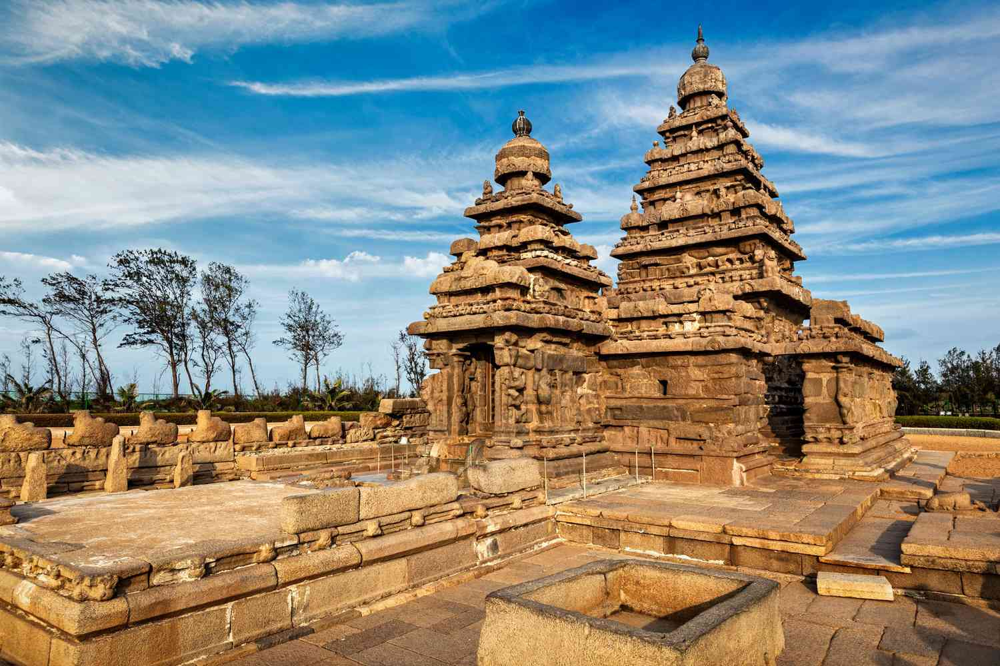

Incredible Places in Chennai
Tired of the sweltering heat of Chennai? Let Marina Beach be a sweet escape spot for you. Beaches in Chennai along the Bay of Bengal coast, happen to be the longest beaches in India and one of the longest in the world. Got enough time to pay a visit to this amazing place during the morning or evening? We suggest that you should not miss out on experiencing the enthralling view of the sun setting or rising from the beach. You may shop for trinkets such as imitation jewellery, and shell mementos from the stalls on the beach side. Among the best places to visit in Chennai with friends, it is perfect to build sand castles or play games like beach volleyball. |
|
|  | Mamallapuram (also known as Mahabalipuram), is a town in Chengalpattu district in the southeastern Indian state of Tamil Nadu, best known for the UNESCO World Heritage Site of 7th- and 8th-century Hindu Group of Monuments at Mahabalipuram. It is one of the famous tourist sites in India. The ancient name of the place is Thirukadalmallai. It is a part of Chennai Metropolitan Area. It is a satellite town of Chennai. Mamallapuram was one of two major port cities in the Pallava kingdom. The town was named after Pallava king Narasimhavarman I, who was also known as Mamalla. Along with economic prosperity, it became the site of a group of royal monuments, many carved out of the living rock. These are dated to the 7th and 8th centuries: rathas (temples in the form of chariots), mandapas (cave sanctuaries), the giant open-air rock relief the Descent of the Ganges, and the Shore Temple dedicated to Shiva. The contemporary town plan was established by the British Raj in 1827. |
Those of you who love literature must have heard or read about the famous Tamil poet and saint, Thiruvalluvar. For the uninformed, Thiruvalluvar is hailed as one of the greatest Tamil scholars. Valluvar Kottam is an intricately designed chariot built in his honour and is one of the most famous Chennai tourist places. The magnificence of Valluvar Kottam can be best experienced early in the morning or when the sun is just setting. Wondering how to reach here? It is located at the intersection of Kodambakkam High Road and Village Road; taxis and buses can be taken from around the city. |
 |
Do you love artefacts? If you do, you will love the Government Museum of Chennai. This place is known for preserving some of the best ancient (10-13th century) and modern South Indian bronzes. What’s more, is that the Amaravathi Gallery houses marble sculptures depicting the life of Gautam Buddha dating back to the 2nd century. It is truly a gem of a place to visit in Chennai for kids and grownups alike |
Tedicated to Lord Vishnu’s incarnation, Lord Krishna, Parthasarathy Temple was built in the 8th century. The intricately carved pillars of this place and colourful gopurams will leave you spellbound making it among the most beautiful places to visit in Chennai. The main features of this temple are the two intricately carved pyramid-shaped rajagopuram or domes, one of which is located in the east direction while the other in the west direction. |
|
Elliot’s Beach is a famous place to visit in Chennai with friends or family. This beautiful beach, which was named after Edward Elliot (the Chief Magistrate, and Superintendent of Madras during the British Era), is one of the cleanest seafronts in India. Sunbathe, relax and unwind, keeping the stress at bay at this extremely calm and scenic place. Featuring in the list of Chennai’s famous places for couples, this one is great for a moonlight walk. |
|
Feeling a little adventurous? How about visiting a national park? Home to over 300 kinds of trees and plants, 150 bird species and 15 species of mammals, reptiles and amphibians, Guindy National Park is a forest situated on the grounds that were earlier part of Raj Bhawan and IIT-Madras. If you are visiting Chennai with your family, make sure you bring your kids here too. We assure you that they will love every bit of this place! |
|
San Thome Church, officially known as St Thomas Cathedral Basilica and National Shrine of Saint Thomas, is a minor basilica of the Catholic Church in India, at the Santhome neighbourhood of Chennai, in Tamil Nadu. The present structure dates back to 1523 AD, when it was built by the Portuguese over the tomb of Thomas the Apostle. In 1896, it was renovated in the Madras province according to neo-Gothic designs, as was favoured by British architects in the late 19th century. |
|
Madras War Cemetery is located in Nandambakkam, Chennai (formerly Madras), Tamil Nadu, India. It was created to receive Second World War graves from civil and cantonment cemeteries in the south and east of India where their permanent maintenance could not be assured. The cemetery occupies 2.75 acres (1.11 hectares) and contains the graves of 856 Commonwealth service people who died in the Second World War. It was established in 1952 by the Imperial War Graves Commission, which is now known as the Commonwealth War Graves Commission (CWGC), to pay tribute to the people of the Commonwealth nations who died in military service. The cemetery is maintained by the CWGC in partnership with Government of India. The cemetery is given to the CWGC under perpetual lease by the Defence Ministry. |
 |
Victoria Public Hall, or the Town Hall, is a historical building in Chennai, named after Victoria, Empress of India. It is one of the finest examples of British architecture in Chennai and was built to commemorate the Golden Jubilee of Queen Victoria.[1] In the late 19th and early 20th centuries, it was used as a theater and a place for public gatherings. The South Indian Athletic Association Club now resides there. |
|
M. A. Chidambaram Stadium, commonly known as the Chepauk Stadium, is a cricket stadium in Chennai, Tamil Nadu, India. Established in 1916, it is the second oldest cricket stadium in the country after Eden Gardens in Kolkata. It is owned and operated by Tamil Nadu Cricket Association (TNCA). The stadium is located at Chepauk, a few hundred meters from Marina beach along the Bay of Bengal. Formerly known as Madras Cricket Club Ground, the stadium is named after Muthiah Annamalai Chidambaram, the former president of BCCI and Head of TNCA. It is the home ground of the Tamil Nadu cricket team and the Indian Premier League team Chennai Super Kings. Chepauk hosted its first Test match on 10 February 1934, hosted the first match of the first Ranji Trophy in 1934 [14] and the Indian cricket team's first test victory in 1952 against England. The 1986 India-Australia match held at Chepauk was only the second ever Tied Test in the history of the game. |